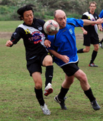
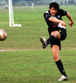
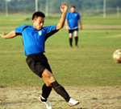
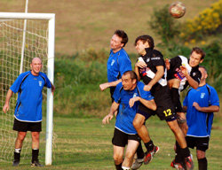

|
Misato, Saturday 18th October
In a sexy new kit that would have drawn admiring gasps from their female fans if such creatures existed, the Albion Old Boys were doing a very good impersonation of classy footballers both before and during Saturday's encounter with Division Two's other newly-promoted team. But the Old Boys came away from Misato with no points for either style or execution as FC International converted a late, late penalty to nick a 2-1 win with the very last kick of the game.
The pre-game bad news for the Old Boys was that none of the replacement body parts ordered from the UK had made it through Japanese customs. The good news was that the new uniforms arrived safely. So with dentures nicely polished and some liberal application of botox linament the seasoned warriors posed for a commemorative daguerrotype (they call them photographs these days Tel - Ed), then lined up vainly hoping that they could nick a quick couple of goals while their opponents eyes were still dazzled by the glare.
But FC International themselves are no mugs in the snazzy kit game, though a River Plate-style sash and bright yellow numbers, while safe enough in Tokyo, would not be an advisable look for a Sunday League game on Hackney Marshes. Anyway, competitive preening soon gave way to some very competitive football, with Inter pressing hard early on and having most of the possession.
The Old Boys survived a couple of minor scares, and managed to give Inter a fright or two on the counter-attack, with centre-forward George Pele Clarkson winning most of the aerial battles and striking partner Hitoshi Ono giving the opposition defenders all kinds of problems every time he ran at, past, round, into, or through them.
So having pretty well held their own for most of the first half against a good footballing team, it was a real sickener for Albion to concede the lead to an avoidable goal, as a defender who shall remain nameless until the end of this report allowed a clearable cross to sail over his head right onto the curly locks of the Inter number nine, whose header gave keeper Kouka no chance. And it could have got worse a few minutes later as the same player again banged in a close range header at the far post. But this time Kouka made a tremendous reflex save to beat out the header from point-blank range and keep his team in with a shout. 1-0 at half-time.
With the second-half advantage of a following wind which was occasionally gusting strong enough to be a factor, the Old Boys reckoned the game was still there for the taking. FC International reckoned they were due a second goal. With neither side willing to yield an inch it became a hard-fought midfield war of attrition, a scenario which probably suited the grizzled veterans more than the younger team, one or two of whom looked a bit ill-equipped for a more competitive tussle. Inter's diminutive center-forward took particular umbrage at having his personal space violated in any way, and was extremely vocal in registering his discomfort. So much so that even Old Boys Grey Eminence Karl Twohig – librarian, poodle-owner, model railway enthusiast, and generally as gentle a fellow as you are likely to meet anywhere other than a Mohatma Gandhi impersonators' convention – even Karl was wound up beyond forbearance and forced to administer some stern discipline, which did nothing beyond earning the Albion midfielder a yellow card. However a measure of justice was restored towards the end of the game when the ref finally decided that the noisy number nine should join Karl in the notebook for, if I heard it right, "getting on my nerves the whole game". A better reason than most for getting a card out, and I hope the TML's referees' report form has a check box for it.
Somewhere in the middle of all this melodrama came the Old Boys equalizer. As Hitoshi latched onto a neat through ball, he saw Inter keeper Jorge so far off his line that the referee's assistant in the Albion half of the pitch was eyeing him suspiciously. The lob was placed to perfection and the Old Boys were level. Inter pressed hard to regain the lead, and the last ten minutes were played almost exclusively in the Albion half, but the Old Boys seemed to be holding on for a well-earned point until, in what turned out to be the very last move of the game, a mis-timed tackle in the Old Boys box gave Inter a penalty kick. Jorge's shot wasn't hit very hard, but it was placed right in the corner, and though Kouka did really well to get fingertips on it, he couldn't keep it out.
 So for the Old Boys a rotten way to lose for the first time this season, but a lot of consolation in the quality of the performance against good opposition. FC International have their sights firmly set on the top division, and though they could do with strengthening one or two positions, they may well have enough quality players to achieve that ambition. The Old Boys have their sights firmly set on a 2011 return to the St Mary's Green Acres Playpen For Gracefully Aging Masters Of The Beautiful Game, but they'll keep on wandering the suburban wastelands of Greater Tokyo giving these open age teams a hard time until it's ready. So for the Old Boys a rotten way to lose for the first time this season, but a lot of consolation in the quality of the performance against good opposition. FC International have their sights firmly set on the top division, and though they could do with strengthening one or two positions, they may well have enough quality players to achieve that ambition. The Old Boys have their sights firmly set on a 2011 return to the St Mary's Green Acres Playpen For Gracefully Aging Masters Of The Beautiful Game, but they'll keep on wandering the suburban wastelands of Greater Tokyo giving these open age teams a hard time until it's ready.
Match report by Terry Cooney
|